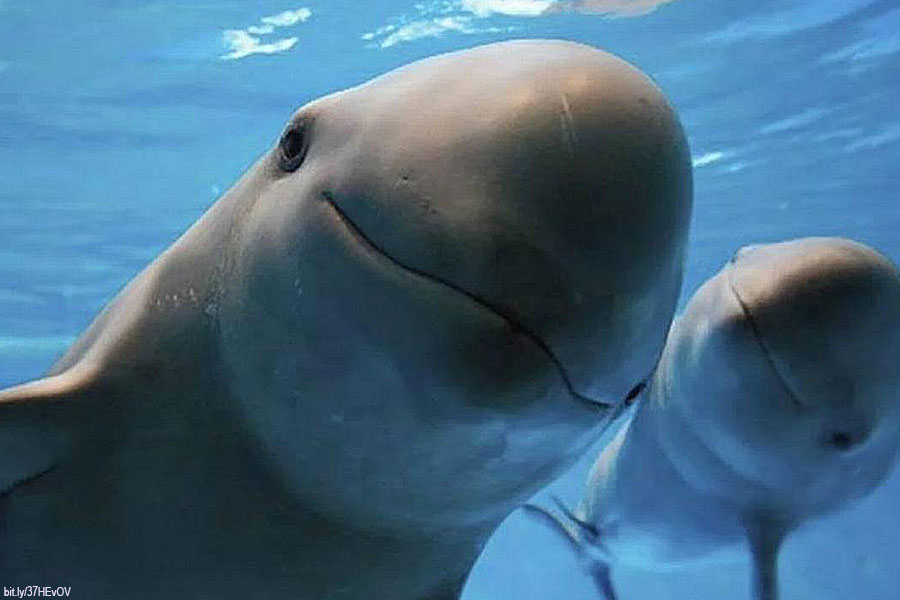
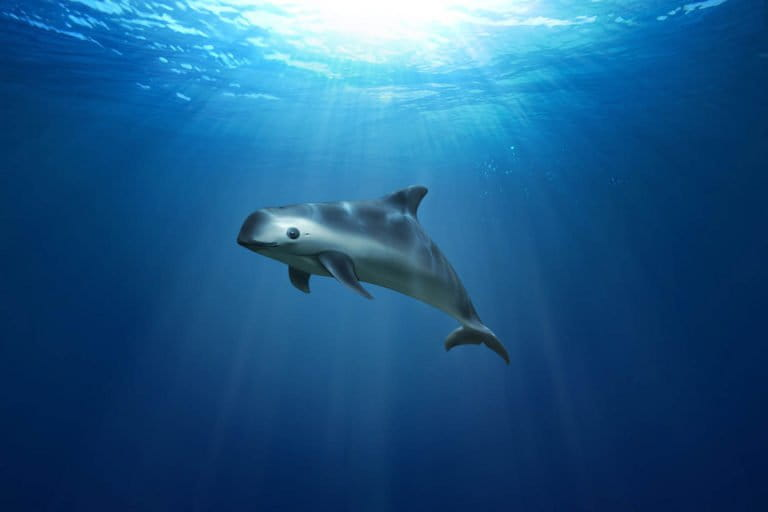
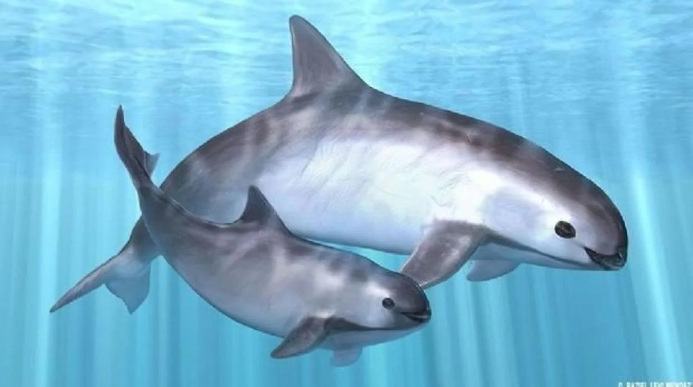

La vaquita marina (Phocoena sinus) es un cetáceo endémico del norte del Golfo de California, México. Es el mamífero marino más amenazado del planeta, con menos de 10 ejemplares estimados en la actualidad. Su principal causa de extinción es la pesca ilegal con redes de enmalle, utilizadas para capturar totoaba, un pez muy cotizado en el mercado negro. Estas redes atrapan accidentalmente a la vaquita, provocando su muerte. A pesar de los esfuerzos de conservación, su población sigue en declive, convirtiéndola en símbolo de la lucha contra el tráfico ilegal y la protección de la biodiversidad marina mexicana.


